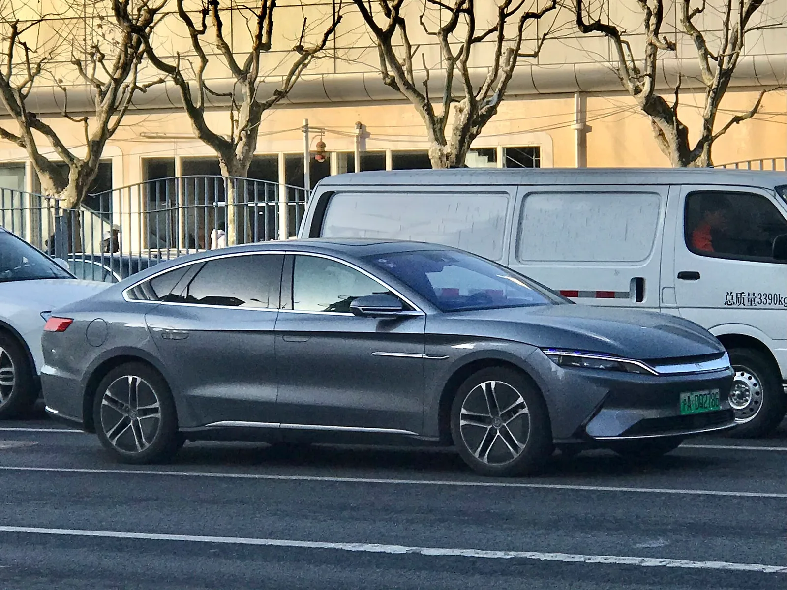

▲ BYD 한. 다한은 이 모델 위에 놓이는 플래그십이다 ⓒ Wikimedia Commons
BYD가 다한(Da Han) EV의 사전판매를 시작했습니다.
후륜 모델의 CLTC 주행거리가 1,008km입니다. 공기저항계수는 0.197로 양산차에서 보기 드문 수치입니다.
이 차는 기존 '한(Han)' 위에 놓입니다. 왕조 시리즈의 새 최상단입니다.
1. 1,008km라는 숫자
| 구동 | CLTC 주행거리 | 출력 |
|---|---|---|
| 후륜 | 1,008km | 370kW 단일모터 |
| 사륜 | 880km | 570kW (764마력) |
102.326kWh로 1,008km를 간다는 것은 100km당 약 10.2kWh를 쓴다는 뜻입니다. 5.2m가 넘는 대형 세단에서 나오기 어려운 효율입니다.
이 효율의 상당 부분은 공기저항에서 나옵니다.
2. 공기저항 0.197이 갖는 의미
| 수치 | 수준 |
|---|---|
| 0.30 이상 | 일반적인 SUV |
| 0.25~0.29 | 일반적인 세단 |
| 0.22~0.24 | 전기차 전용 설계 |
| 0.20 이하 | 양산차 최상위권 |
0.2 아래로 내려간 양산차는 손에 꼽습니다. 공기저항은 속도의 제곱에 비례해 커지므로, 고속도로 주행에서 주행거리 차이가 크게 벌어집니다.
전고 1,510mm라는 수치가 이를 뒷받침합니다. 전장 5,256mm에 비해 매우 낮습니다. 실내 헤드룸을 일부 내주고 공력을 택한 설계입니다.

▲ 낮고 긴 비례가 공기저항계수 0.197의 배경이다
3. 3.8초와 32.83m
| 합산 출력 | 570kW (후 370 + 전 200) — 764마력 |
|---|---|
| 0→100km/h | 3.8초 |
| 100→150km/h | 3.2초 |
| 최고속도 | 270km/h |
| 제동거리(100→0) | 32.83m |
| 회전반경 | 4.95m |
주목할 항목은 100→150km/h 3.2초입니다. 0→100km/h보다 중고속 재가속이 빠르다는 것은, 고속 영역에서도 출력이 유지된다는 뜻입니다. 전기차에서는 흔치 않은 특성입니다.
제동거리 32.83m도 준수합니다. 2톤이 넘을 대형 세단에서 30m대 초반은 좋은 수치입니다. 다만 제조사 발표치는 통상 최적 조건 기준입니다.
회전반경 4.95m는 휠베이스 3,130mm를 감안하면 인상적입니다. 후륜 조향이 들어갔을 가능성이 높지만, 보도에 명시되지는 않았습니다.
4. 왕조 시리즈에서의 자리
| 구분 | 내용 |
|---|---|
| 시리즈 | 왕조(Dynasty) 9시리즈 |
| 포지션 | 기존 한(Han) 위의 플래그십 대형 세단 |
| 데뷔 | 2026 청두 오토쇼 |
| 추가 예정 | PHEV — 1.5T 엔진 + 200kW 모터 |
모든 트림에 라이다가 들어갑니다. 트림명 자체가 "라이다 프리미엄", "라이다 플래그십"입니다. 24만9,900위안이라는 시작가에 라이다가 기본이라는 것은, 중국 시장에서 라이다가 더 이상 고가 옵션이 아니게 됐다는 신호입니다.

▲ 다한은 왕조 9시리즈로, 기존 한의 상위에 놓인다
5. 국내 기준으로 읽을 때 주의할 점
| 기준 | 성격 |
|---|---|
| CLTC(중국) | 저속 구간 비중이 높아 낙관적으로 나온다 |
| WLTP(유럽) | 중간 |
| 국내 산업부 인증 | 상온·저온을 나눠 측정 — 가장 보수적 |
같은 차라도 CLTC 1,008km가 국내 인증에서는 상당히 줄어듭니다. 경험적으로 CLTC 대비 20~30% 낮게 나오는 경우가 많습니다. 국내 인증을 거치지 않은 차의 주행거리는 비교 기준이 다르다는 전제로 읽어야 합니다.
다한의 국내 출시 계획은 발표되지 않았습니다. BYD 코리아는 현재 아토 3, 씰, 씨라이언 계열을 중심으로 운영 중입니다.

▲ BYD는 왕조 시리즈와 오션 시리즈로 라인업을 이원화해 운영한다
6. 정리
BYD 다한 EV가 24만9,900위안(약 3만6,850달러)부터 사전판매에 들어갔습니다. 후륜 플래그십 26만9,900위안, 사륜 플래그십 29만9,900위안입니다.
후륜 모델은 CLTC 1,008km, 사륜은 880km입니다. 배터리는 최대 102.326kWh, 공기저항계수는 0.197입니다. 차체는 5,256mm에 휠베이스 3,130mm입니다.
사륜 모델은 570kW(764마력)로 0→100km/h 3.8초, 최고속 270km/h, 제동거리 32.83m입니다. 왕조 9시리즈 플래그십으로 청두 오토쇼에서 데뷔했고, PHEV(1.5T + 200kW)가 추가될 예정입니다. 국내 출시 계획은 없습니다.